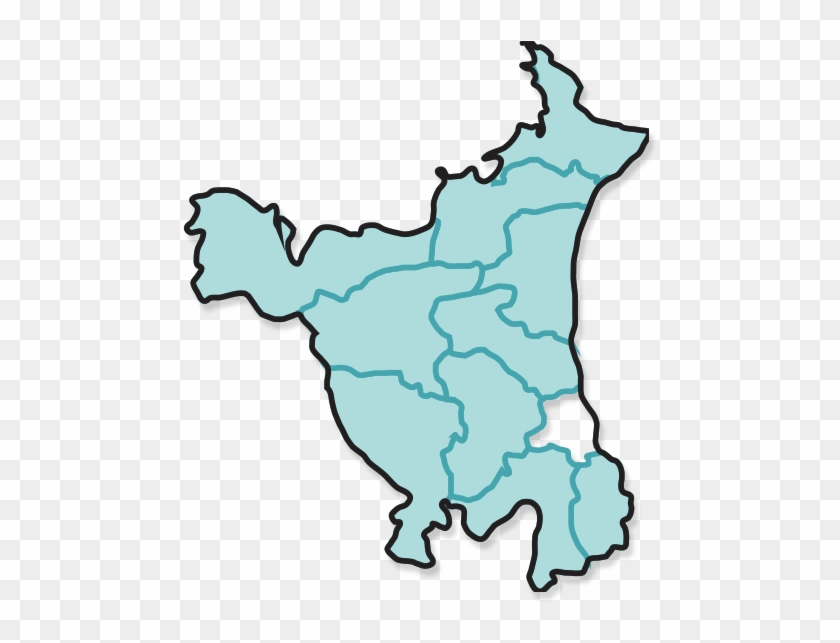
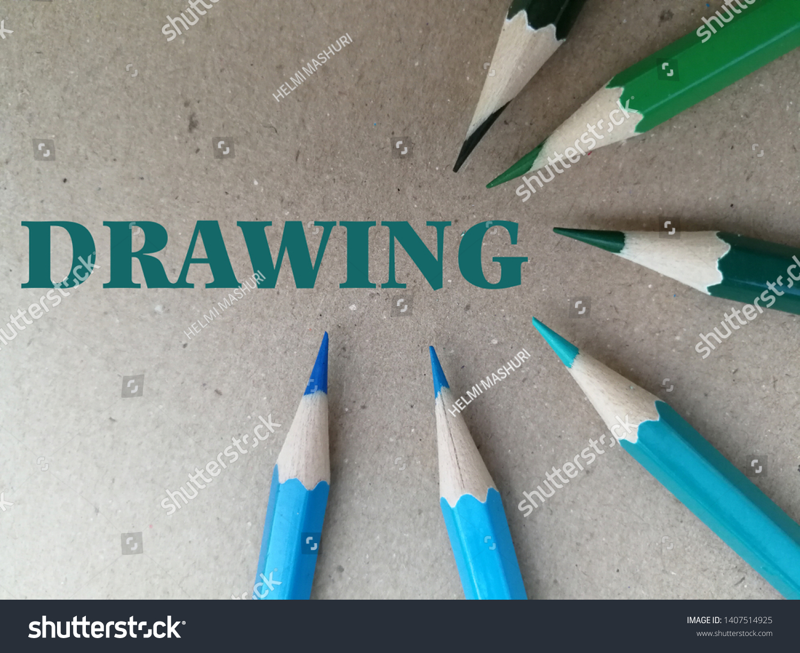

HY I AM A VIVEK STUDENT OF VIDYA NIKETAN SCHOOL IN CLASS 10

Education is an essential part of our lives. We are
nothing without knowledge, and education is what
separates us from others. The main step to acquiring
education is enrolling oneself in a school. School
serves as the first learning place for most of the people
. Similarly, it is the first spark in receiving an education
. In this essay on my school, I will tell you why I
love my school and what my school has taught me.
Everything on a web page from the logo, to the
search bar, buttons, overall layout and how the
user interacts with the page was created by a front
end developer. Front end developers are in charge
of the look and feel of the website

Haryana, state in north-central India. It is bounded
on the northwest by the state of Punjab and the union
territory of Chandigarh, on the north and northeast by the
states of Himachal Pradesh and Uttarakhand, on the east
by the state of Uttar Pradesh and the union territory of
Delhi, and on the south and southwest by the state of
Rajasthan.

My hobby is drawing. I love to draw with different
colours Drawing gives me happiness. My most
favourite time is when I come back from school
because at that time I get free time to paint

Cricket is a very famous game. It can be played by men
, women and children of all ages. It is an outdoor game
which requires a bat, ball and stumps. It is usually
played on a field by two teams and the team that scores
more runs, wins the game. Umpires are also present to give
a fair decision and stop arguments